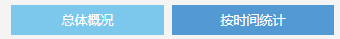
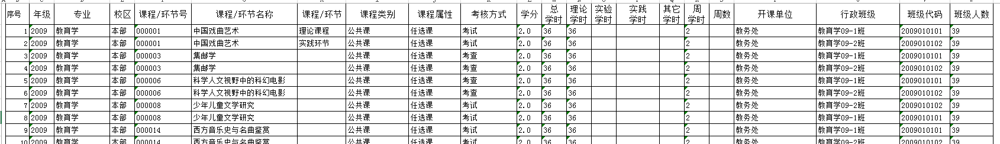

查询开课计划
查看开课计划，需同时查询生成开课计划数据+通识课开课计划数据
详细格式见附件，如系统中无对应字段维护，则显示空白即可
列表样式(到行政班级)
年级:
院系:
专业:
学年学期:
查询条件：
1.学年学期，加载校历的所有学年学期，默认当前学年学期
2.年级，加载已存在开课计划的年级列表，默认全部，可下拉选择
3.院系，加载当前用户存在数据权限的院系列表（教务处可操作所有院系数据，数据权限设置的院系：可操作对应院系的数据），默认全部
4.专业，加载所有专业，默认全部，可下拉选择，统一数据配置，加载所有，默认全部
5.课程/环节，默认全部，加载理论课程、实践环节
学分：学分字段取培养方案保存时的学分值， 如是增开课程则取增开开课计划时保存的值，如是通识课开课，则取通识课开课计划时保存的值。
联动：
选择年级后仅加载对应年级设置的专业记录
选择院系后仅加载对应院系的专业
列表：
1.列表按年级、专业、课程/环节号升序排列；
2.分页，使用公用分页控件

课程/环节:
1,页面顶部2个tab页签
2.根据选择的页签不同，下面加载不同的查询条件 有红色字体说明
3.列表内容在附件 -
